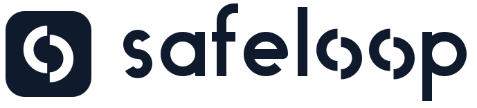

Aşama 4 · palet, tipografi, kullanımda örnekler. Kontrast oranları WCAG 2.1'e göre hesaplandı.

Uygulama durum renkleri · yalnız arayüzde, markada ve pazarlamada kullanılmaz
Başlık · Plus Jakarta Sans 700/800 (SIL OFL)
Metin ve arayüz · Inter 400/500/600 (SIL OFL)
| Ön plan | Zemin | Oran | Kullanım | Sonuç |
|---|---|---|---|---|
| Lacivert | Beyaz / Kâğıt | 17.3 / 16.1 | Gövde metni, başlık | AAA |
| Beyaz | Lacivert | 17.3 | Birincil buton, üst bar | AAA |
| Lacivert | Turkuaz | 8.1 | Vurgu butonu | AAA |
| Turkuaz Koyu | Beyaz / Kâğıt | 5.1 / 4.7 | Bağlantı, aksan metni | AA |
| Arduvaz | Beyaz / Kâğıt | 6.2 / 5.8 | İkincil metin | AA |
| Başarılı / Uyarı / Hata | Kendi zemini | 4.9 / 4.6 / 4.8 | Durum etiketi | AA |
| Turkuaz | Beyaz | 2.1 | Metin olarak kullanılmaz | ✕ |